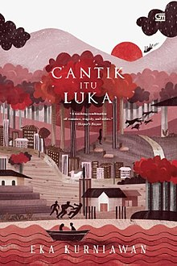

| Home | Best Seller |
|  | Judul Buku : Cantik Itu Luka Penulis : Eka Kurniawan Tanggal Terbit : 17 Januari 2018 Jumlah Halaman : 520 halaman Penerbit : Gramedia Pustaka Utama Harga : Rp125.000 |
Sinopsis Novel Cantik Itu Luka |
| Suatu sore di Kota Halimunda, seorang perempuan bernama Dewi Ayu bangkit dari kuburannya setelah dua puluh satu tahun meninggal.
Kuburan itu bergoyang, tanahnya retak dan berhamburan seperti ditiup dari bawah, timbul badai dan gempa kecil, rumput dan nisan
melayang ke udara, dan di balik tanah yang berjatuhan seperti hujan itu muncul sosok perempuan tua berdiri dengan sikap jengkel
yang kikuk. Perempuan tersebut bangkit dengan kain kafan yang membalutnya seperti baru meninggal kemarin. Kebangkitannya menimbulkan kegaduhan di masyarakat sekitar kuburan yang melihatnya. Banyak orang yang lari, terjatuh, dan berteriak. Dewi Ayu yang melihatnya hanya batuk-batuk dan terkejut melihat dirinya ada di tengah kuburan. Ia juga mengomel sendiri entah pada siapa. Sebab, bagi Dewi Ayu, ada sekelompok orang yang berbuat jahat kepadanya dengan menguburnya hidup-hidup. Dewi Ayu adalah seorang wanita berusia 51 tahun ketika ia meninggal, kini tidak tahu bagaimana cara untuk menghitung usianya. Dewi Ayu dulunya adalah seorang pelacur yang memiliki rupa sangat cantik, pelacur yang paling dicari-cari para tentara Jepang dan Belanda sejak masa perang. Dewi Ayu meninggal setelah 12 hari melahirkan anak keempatnya, hasil dari pekerjaan yang dilakukannya. Memori terakhirnya itu membuatnya langsung bergerak mencari bayinya, yang tentunya pada saat itu bukan lagi bayi. Bayi itu diberi nama Cantik, bertolak belakang dengan rupanya yang mengerikan bagi orang-orang yang melihatnya. Kulitnya hitam legam, dan hidungnya nampak seperti colokan listrik. Tidak seperti ketiga anaknya yang lain, walaupun ia tidak mengetahui sosok ayah semua anaknya, Dewi Ayu tidak menginginkan anak keempatnya itu untuk hidup. Dewi Ayu kemudian mencoba berbagai cara untuk dapat membunuh kandungannya itu. Fisik buruk Cantik mungkin adalah akibat dari minum 5 butir parasetamol pemberian mantri dengan satu botol soda. Mungkin juga karena tertusuk oleh tongkat kayu kecil yang dimasukkan ke dalam perut, yang membuat ibunya itu pendarahan selama 2 hari. Mungkin juga itu adalah akibat dari 4 cara lain dalam rangka percobaan membunuh Cantik dalam kandungan, atau mungkin memang alami begitu gen dari keturunannya, yang tidak bisa diketahui siapa sosok ayahnya itu. Terlepas dari percobaan untuk menggugurkan kandungannya yang semua hasilnya sia-sia, Dewi Ayu mempelajari bahwa bayi itu adalah seorang petarung sejati. Bayi itu ingin memenangkan pertarungan yang tak pernah dimenangkan oleh ibunya. Maka itu, Dewi Ayu akhirnya membiarkan bayi itu membesar dan lahir. Kecantikan Dewi Ayu memang adalah sebuah malapetaka yang menimbulkan kutukan baginya, dan bagi anak-anaknya. Selain menjadikannya seorang pelacur, kutukan lainnya yaitu semua anak perempuan yang dilahirkan Dewi Ayu akan mengalami patah hati tiada henti. Meski ketiga anak perempuannya memiliki rupa yang cantik, itu tidak menjadikan mereka kebal akan kutukan tersebut. Alamanda, anak pertama Dewi Ayu dipaksa untuk menikah dengan seorang Jenderal yang tidak pernah ia cintai. Sebab, Alamanda hanya mencintai seorang lelaki bernama Kamerad Kliwon yang merupakan seorang komunis sejati. Alamanda begitu tidak menginginkan untuk menikah dengan Sang Jenderal. Sebagai wujud penolakan terhadap Sang Jenderal, Alamanda pernah memasang gembok di daerah kemaluannya, agar tidak disetubuhi oleh Sang Jenderal. Namun, pada akhirnya ia tetap diperkosa oleh pria yang berstatus sebagai suaminya tersebut. Anak kedua Dewi Ayu yang bernama Adinda menikah dengan Kliwon Sang Kamerad Komunis. Ya, Adinda mencintai lelaki yang sama, yang dicintai juga oleh kakak perempuannya, Alamanda. Adinda tetap menikahi Kliwon meski ia tahu bahwa Kliwon hanya mencintai kakaknya. Kisah cinta Adinda menjadi sangat menyakitkan, karena mencintai seseorang yang mencintai orang lain. Anak ketiga Dewi Ayu yang bernama Maya Dewi menikah dengan preman paling kuat yang ada di Kota Halimunda. Preman itu pernah bersetubuh dengan ibunya, walaupun memang hampir semua orang yang ada di Kota Halimunda pernah bersetubuh dengan ibunya yang adalah pelacur paling cantik. Meski begitu, fakta tersebut adalah fakta yang menyakitkan. Anak keempat Dewi Ayu, Si Cantik, orang yang memiliki tampilan fisik paling buruk rupa di Kota Halimunda, bahkan mungkin di dunia. Cantik mendapatkan kutukan paling buruk yang tidak bisa dibayangkan sebelumnya. Cantik tidak pernah dicintai dan tidak pernah menikah. Pada akhirnya, jawaban atas penyebab kutukan tersebut akhirnya diketahui. Semua kutukan ini disebabkan oleh tangisan seorang laki-laki, yang bukan merupakan tangisan biasa, melainkan tangisan penderitaan. Penderitaan karena kekasih yang dicintainya dipaksa menikah dengan orang lain. Kekasih yang dicintainya itu tak lain dan tak bukan adalah Ma Iyang, ibu dari Dewi Ayu. Ma Iyang menikah dengan orang Belanda bernama Henri Stammler, dan hasil pernikahannya adalah Dewi Ayu sebagai anaknya. Lelaki itu memiliki dendam yang sungguh besar dan membuatnya dendam dengan Ma Iyang dan Henri Stammler, beserta seluruh keturunannya. Dendam tersebut membuatnya melahirkan sebuah kutukan, agar menjadikan keturunan Ma Iyang dan Henri Stammler dapat merasakan apa yang ia rasakan. |